クリック、または Esc で閉じる
テクノロジーは、もはや私たちが「使う道具」ではありません。何を欲しいと思うかまで、すでに技術に方向づけられている。ならば、そもそもテクノロジーとは何なのか。この講義は、その問いをまっすぐ立て、原初の技術まで降りていって考え直すための、三部構成の見取り図です。
哲学が「人間とは何か」「世界とは何か」を問うてきたのに対して、技術哲学が問うのは、技術と人間・世界とのあいだである。
技術哲学とは、技術そのもの——テクノロジーそのものを、哲学の問いとして扱う学問です。技術とは何か。技術は人間や社会に何をするのか。良い技術とは何か。位置づけとしては哲学の一分野ですが、相手にするのは、いま実際に作られ、使われ、社会を動かしている現実の技術です。
講義は三部構成でした。第1部が「なぜ、いま技術哲学が必要なのか」という招待。第2部が「現代の技術哲学が、何をどう問うているのか」というカタログ。そして第3部が、七沢自身の考え——原初の技術から考える、という提案です。
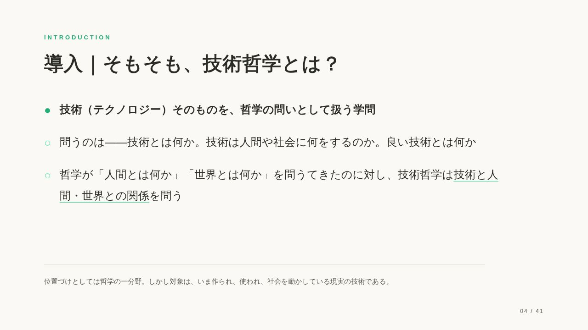
まったくメジャーではないこの学問が、なぜいま切実なのか。二つの不可分性、実質的な技術決定論、そしてジレンマ——問いの形を変えるしかない、という地点まで。
講義は、身近なところから始まりました。今日一日、テクノロジーはどこにあったのか。
朝、目が覚める。起きる時刻を決めたのは、あなたか、通知か。そもそも時計も、作られたものです。通勤中、今日の「世の中」はフィードが選んだ順番で届く。仕事ではAIに下書きをさせ、考えの筋も言い回しも少しずつ寄っていく。買うもの、観るもの、会う人。候補はレコメンドが並べたもの。そして夜、仕事を辞めるか、別れるか——人ではなくAIに相談する人が現れています。
ここで押さえるべきは、ほとんどのテクノロジーは気づかれないということです。そして私たちは、次々に「便利な道具」を追加していく。現代では、もはや何を欲しいと思うかまで、すでに技術に方向づけられている。
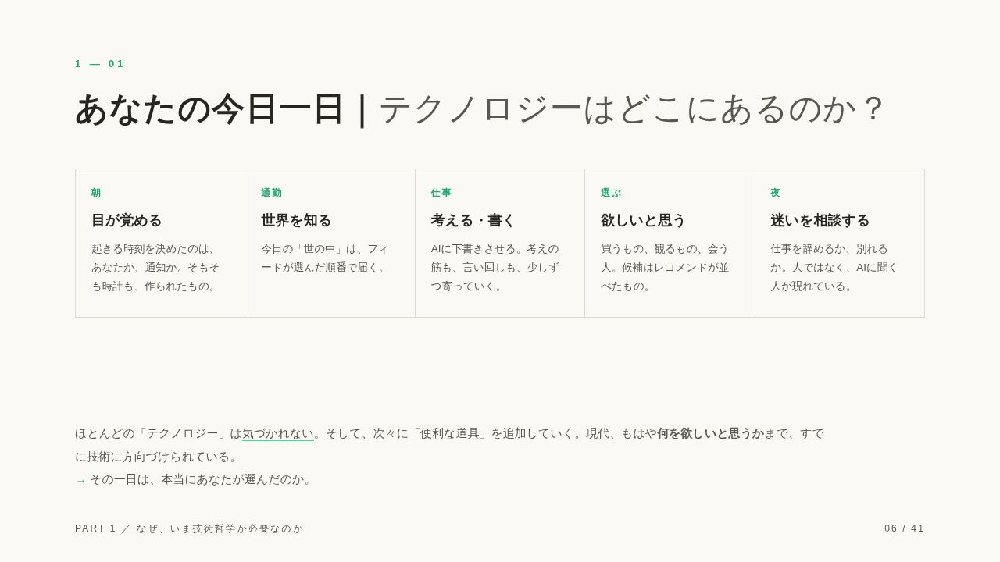
人類はその誕生以来、技術によって生存を確保してきました。産業革命以後に生まれた技術——テクノロジー——は生活のインフラとなり、巨大な機構になった。そしてAIが出てきて、思考や感性にまで入り込むようになった。「人間とは何か」「AIとは何か」はしきりに問われている。ならば、そもそもテクノロジーとは何かを問うべきではないか。これが出発点です。
ところが、と七沢は続けます。ぶっちゃけ、技術哲学はまったくメジャーではない。連載も翻訳もしてきたが、他の分野と比べれば圧倒的にマイナーである。しかもこれは、努力の量の問題ではなく構造の問題だ、と。
哲学をやっている人は、どうも人間が好きなのです。人間とは何か、人間の悩みを考えたい。反対側にある技術には興味がない。逆に技術をやっている人にとって、哲学は付属物にすぎない。作ってなんぼで、人間とは何かは後から考えればいい。その間を取った学問である技術哲学は、両側から構造的に無視される。
ここが重要なところです。無視されているのは「哲学」ではありません。哲学そのものは、むしろ生きるための処方箋として求められてさえいる。無視されているのは、技術と哲学のあいだなのです。
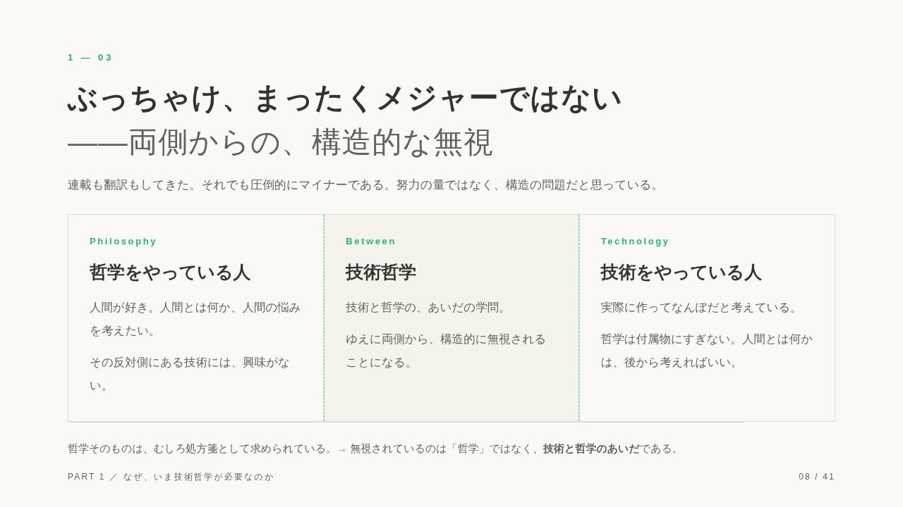
それでも七沢がここを無視できないのは、これまでの前提が二つとも成り立たなくなっているからです。「技術は単なる道具である」「技術に哲学は不要だ」——この二つ。代わりに立てるべき前提が、二つあります。
思想や世界観がテクノロジーを方向づけ、その逆もまた起きている。だから技術問題は、そのまま倫理問題になるのです。
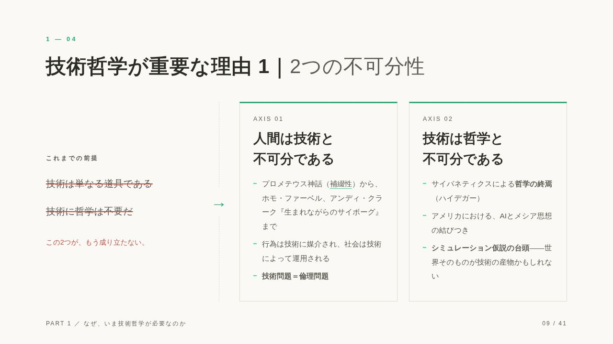
その具体例として挙げられたのが、標的選定のアルゴリズムでした。「誰を撃つか」を先に絞り込むのはアルゴリズムである。同じように、誰を生かし、誰を採用し、誰を信用するかを決めるのは、テクノロジーである。
これは技術の話か、倫理の話か。もう分けられません。閾値をどこに置くか、誤検出をどこまで許すか——設計上のパラメータが、そのまま生死の判断になる。医療のトリアージにも、採用の選別にも、与信にも、量刑支援にも当てはまります。そしてその判断は、法廷でも議会でもなく、開発の現場で先に決まってしまっている。だから「作ってから考える」は、もう成り立たない。
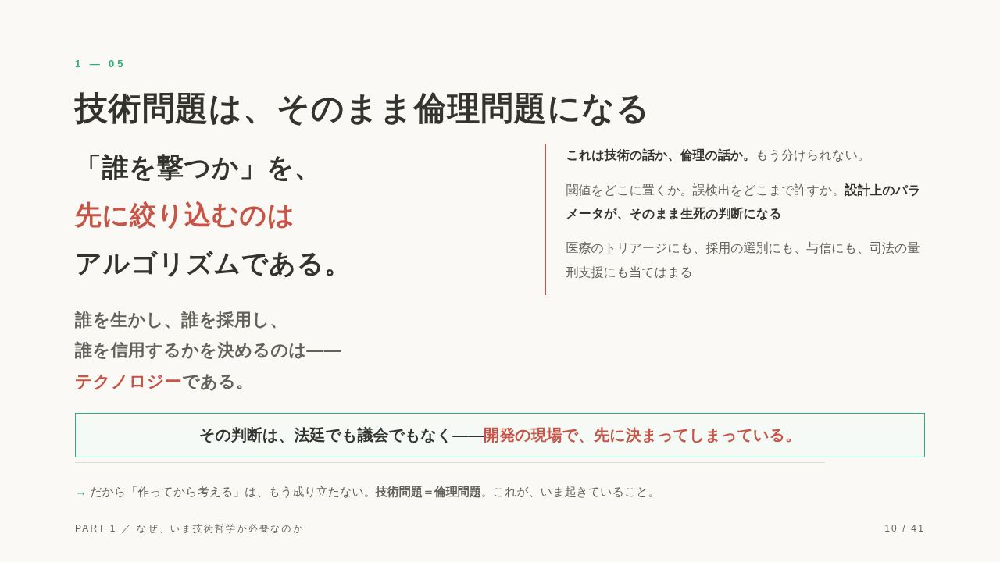
二つ目の理由に入る前に、テクノロジーを発展させている駆動力が15並べられます。便利になりたい。早くしたい。安全に生きたい。儲けたい。他国に負けたくない。病気や老いが怖い。体の弱さを補いたい。知りたい。つながりたい。人手が足りない。災害が怖い。取り残されたくない。一度便利になると戻れない。
そして最後の二つは、もはや人間の欲求ですらありません。技術が次の技術を生む「技術の連鎖」と、勝手に最適化され続ける「AI・自動進化」です。
ここで問いが立ちます。これらを、やめることはできますか。——どれも、やめろとは誰にも言えない。だから私たちは、テクノロジーに抗えない。
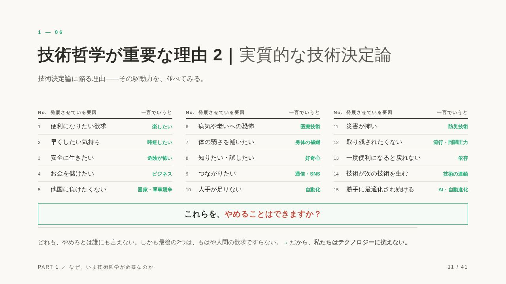
技術決定論は、技術哲学の世界では「間違った考えの典型」とされてきました。素朴すぎる、単純すぎる、と。けれども現実のほうは、そのように動いてしまっているのではないか——これが実質的な技術決定論という言い方の意味です。
技術は技術自身の論理で直線的に進歩し、社会はその進歩に合わせて階段を上るように作り替えられていく。蒸気機関が産業社会を作り、インターネットが情報社会を作った。では、AIは何を作るのか。誰かがそれを信じているからではなく、事実としてそう動いている、というのがポイントです。
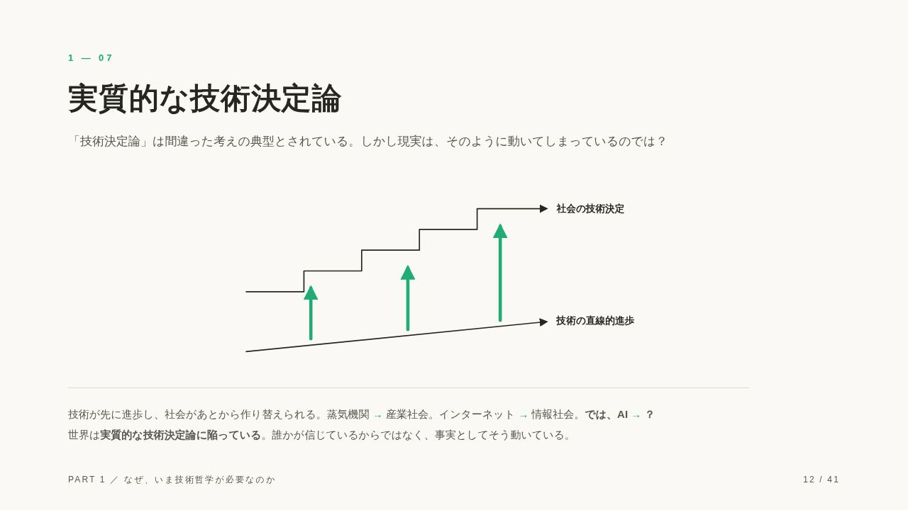
ここでテクノロジーのジレンマが提示されます。負の側面は、いくらでも挙がる。世界を均質化する。奥行きを奪う。環境を破壊する。戦争を助長する。注意を収奪する。格差を広げ、監視を可能にする。判断を外部化する。
しかし同時に、私たちはテクノロジーと分離不可能です。医療を手放せば助かる命が助からない。いまの人口は技術なしには養えない。電力・水道・通信が止まれば社会が止まる。むしろ、そうして作られた安全性や医療技術を前提として初めて生きられる人生を、私たちは生きている。手放すことは、ときに死を意味する。
つまり「やめる」か「続ける」かという二択では、答えが出ない。
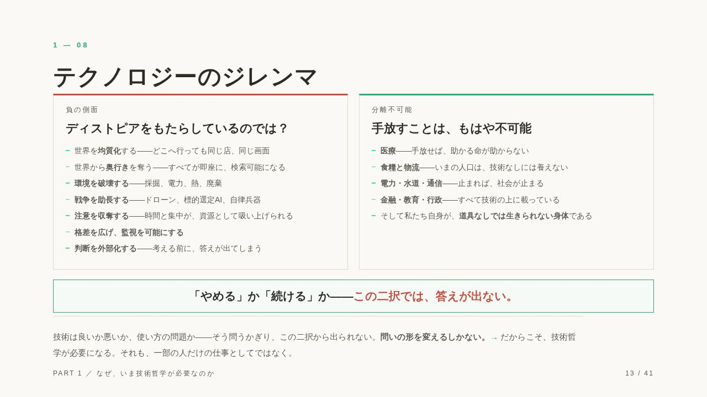
ここで、この講義でもっとも鋭かった一枚が来ます。「じゃあ負の側面だけ取り除けばいいじゃないか」と思うでしょう。ところが、それができない。なぜなら——テクノロジーの負の側面は、そもそも見えないからです。
同じことが、AIでも起きるはずです。何が問題になるかも、いつ出てくるかも、まだわからない。
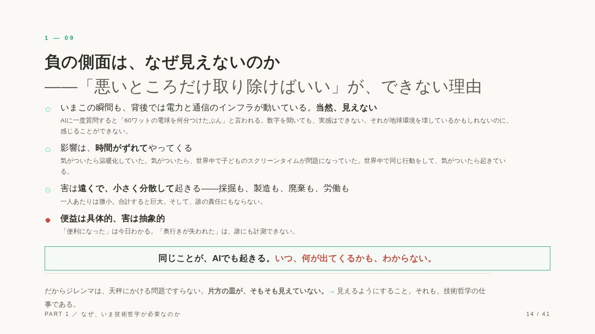
ここで、さきほどの「両側から無視される」図が反転します。哲学の側の人へ——人間のあり方はもう技術と分けられない。技術を問わずに、人間は問えない。技術の側の人へ——何をつくるべきかという判断は、技術の内側からは出てこない。まん中にある「技術は単なる道具ではなく、人間や社会のあり方を形成する」という一点が、いま両側にとって他人事ではなくなった。
だから、すべての人がこの厄介な問題に向き合うべきだ、と七沢は言います。そして、問いの形そのものを変える必要がある。
第1部のまとめは、船の比喩でした。船内の計器を調べている間にも、船は高速で進んでいる。これまでの問いは船内の問い——「AIとは何か」「人間はどうあるべきか」。どれも重要です。けれども技術哲学が問うのは、航路のほうです。〈人間＋テクノロジー〉のこの船は、どこへ向かうのか。誰が航路を描いたのか。その航路は、望ましいのか。
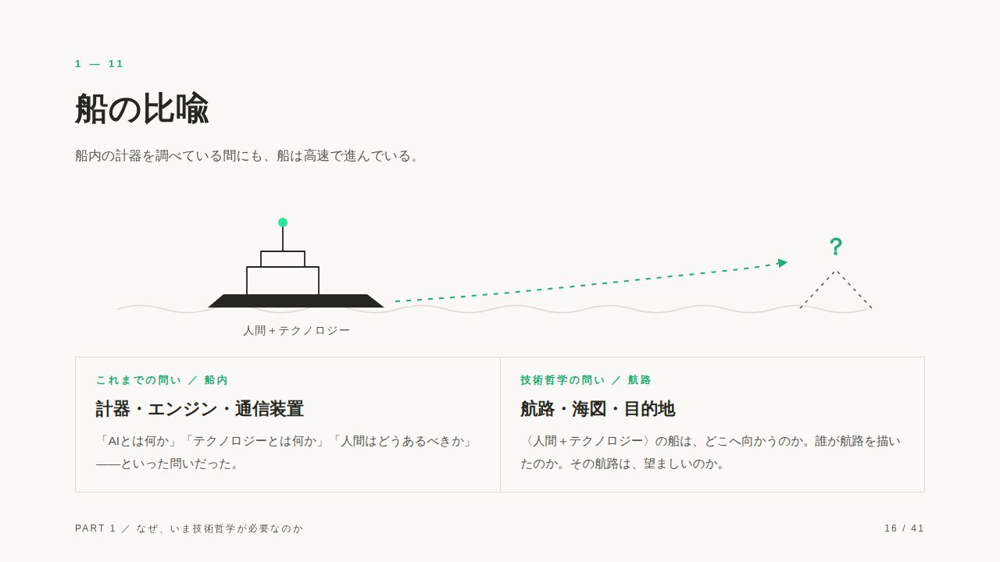
〈人間〉〈技術〉〈世界／社会〉——この三つの配置をめぐって、現代の技術哲学は何をどう問うているのか。五つの考え方のカタログ。
第2部は駆け足のカタログです。大前提は「技術は単なる道具ではない」——技術哲学者なら全員が同意する出発点。そのうえで五つ。
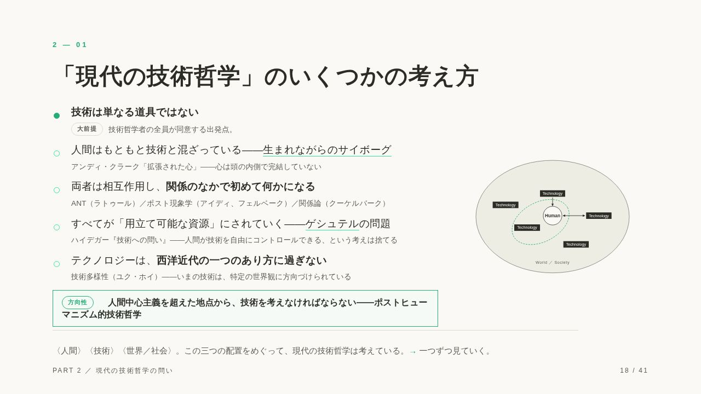
道具説はこう言います。包丁は料理にも凶器にもなる。善悪は使い手の側にあって、技術そのものは中立である。技術哲学はそうは考えません。道路が引かれれば人の流れが変わる。SNSが広まれば「話題」というものの形そのものが変わる。技術は使われる前から、可能な行為の範囲を決めている。
つまり技術は目的のための手段ではなく、何が目的になりうるかそのものを、先に形づくっているのです。
アンディ・クラークとチャーマーズの「拡張された心」。心は頭蓋の内側で完結していません。手帳に書いた予定、指を折って数えること、そろばん、スマートフォン。外部の道具が、そのまま思考の一部として働いている。眼鏡は「使う道具」ではなく、かけた瞬間に視覚の一部になる。杖は手の延長になる。
これは脳のレベルでも確かめられています。脳科学者・入來篤史のサル実験——棒を持たせて先端で物に触れさせると、棒の先までを自分の身体として扱うような脳の反応が現れる。道具を持つと、認識の範囲そのものが広がるのです。
だから人間は、機械を埋め込むまでもなく生まれながらのサイボーグである。サイボーグとはSFの未来像ではなく、人間の常態のことです。
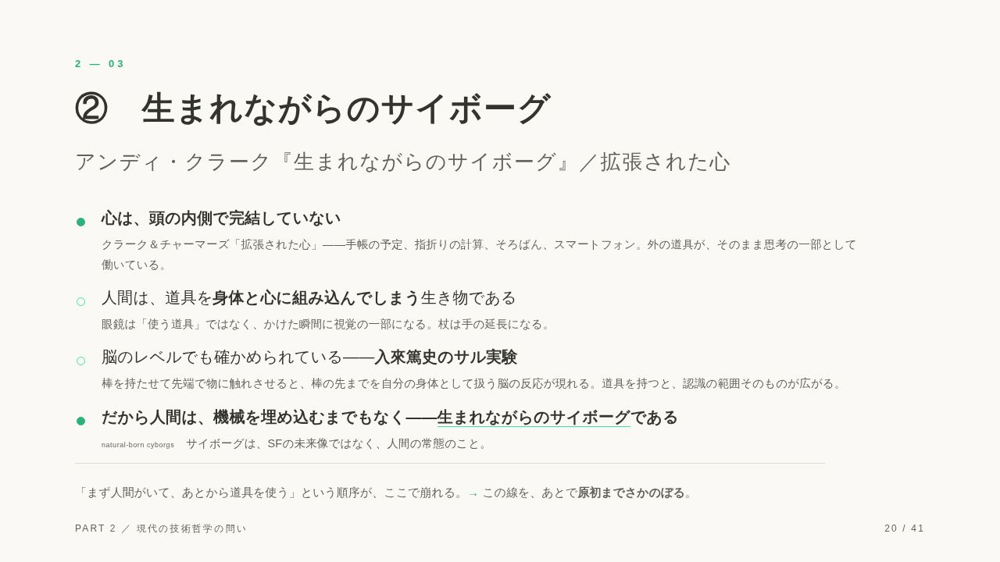
ここで一枚、独立したスライドが置かれます。第1部のジレンマと、この第2部をつなぐ蝶番です。
車を運転しているとき。うまくバックして停めて、降りたら壁まで10センチだった——あれは車の外形が身体の側に組み込まれているということです。運転している間、人は「車＋人間」というすごく大きな身体になっている。
ところが車から降りた瞬間、それは対象に戻ります。かっこいいな、汚れてるな、と眺めるものになる。さっきまで一体だったものが、外側の物体になる。
つまり道具は、内側であり、同時に外側でもあるという矛盾した状態で成立している。そしてこの矛盾が、第1部のジレンマの根にあります。内側にいる者には、外側で起きていることが見えない。
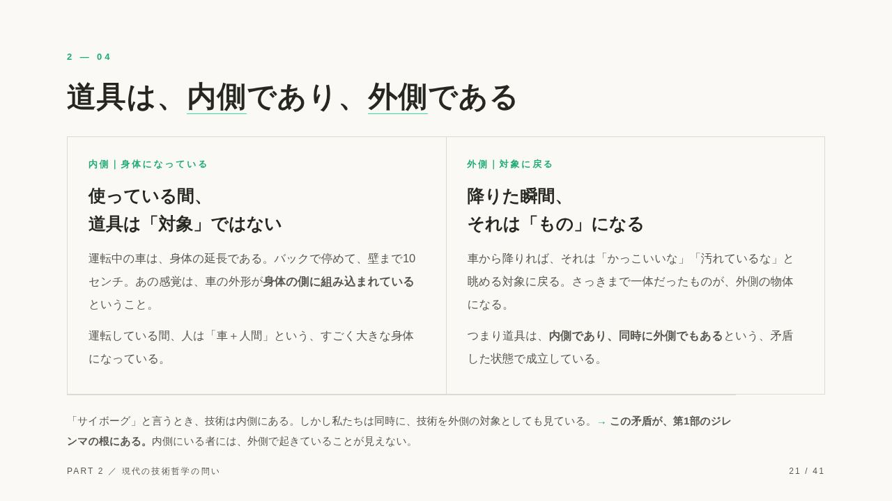
③ 関係のなかで何かになる。ラトゥールのアクターネットワーク理論では、人もモノも等しくアクターです。銃を持った人は、銃なしの人とも、人なしの銃とも違う存在になる。しかも銃は、それを作る会社、工場、規制する法律、射撃場があって初めて成立している。技術は絡み合うネットワークとして成立しているわけです。アイディやフェルベークのポスト現象学は、技術が人間と世界のあいだに立って知覚と行為を媒介すると言います。そしてクーケルバークの関係論——「AIに意識はあるか」をまず確定してから扱いを決める、という順序をやめる。技術も人間も、関係のなかで初めて何かになる。
④ ゲシュテル（総かり立て体制）。ハイデガー『技術への問い』です。近代技術のもとでは、あらゆるものが用立て可能な資源として現れてくる。ライン川は風景ではなく発電量になり、森は木材資源になり、人は「人材」になる。誰かが選んだ方針ではなく、そう現れてしまうという世界の様式そのものです。長らく古い・悲観的すぎるとされてきたこの技術論は、原発事故のあと読み直されました（國分功一郎『原子力時代における哲学』）。そしてAIの時代、データも、注意も、人の判断そのものも用立て可能な資源になる。ゆえに人間が技術を自由にコントロールできるという考えは、捨てなければならない。私たちのほうが、すでにその内側にいるのです。
⑤ テクノロジーは西洋近代の一つのあり方に過ぎない。テクノロジーは普遍だと思われていますが、その中身は西洋近代という特定の世界観の産物です。世界をメカニズムとして捉え、法則を取り出し、資源として用立てる。技術の背後には、つねに宇宙観・世界観がある。ならば、別の世界観に根ざした別の技術のあり方もありうる——ユク・ホイの言う技術多様性です。
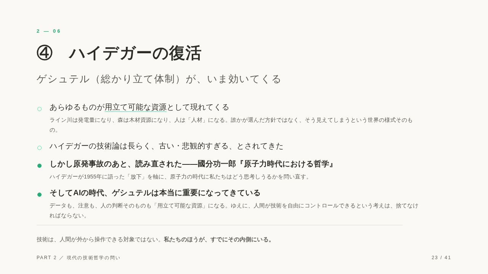
五つを突き詰めると、降ろすべき中心が二つ見えてきます。
一つ目が「ヒューマン」。西洋近代的人間観——世界から独立した自律的な主体、自然の主人にして所有者としての人間です。これを特権的な中心から降ろすのがポストヒューマニズム。ただし七沢は、現代の欧米のポストヒューマニズム論は看板ばかりで脱しきれていないと言います。「人間を超えた」と語っているのは、やはり人間なのだ、と。
二つ目が「テクノロジー」。人間を降ろした席に、今度はテクノロジーを座らせる道もある。トランスヒューマニズムです。けれどもこれは中心が入れ替わっただけで、「中心が一つある」という構造はそのまま残る。
では、両方を降りた先には何があるのか。ここから先が、七沢自身の考えです——モア・ザン・ヒューマンと、プリミティブ・サイボーグ。
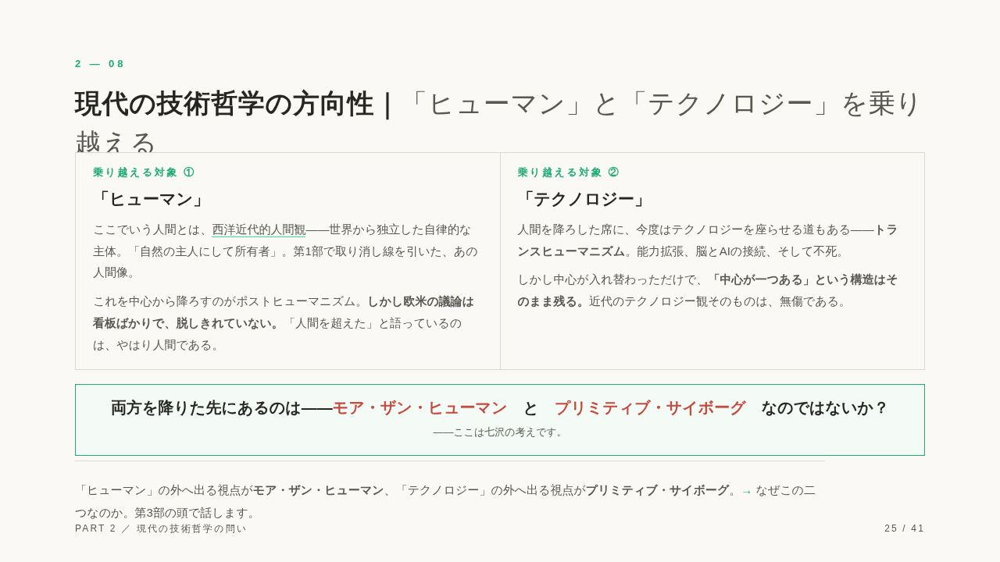
ここからは七沢の考え。理論からではなく、身体から入る——そして最後に、第1部の問いへ戻ってくる。
「ヒューマン」の外へ。欧米の議論は、どうしても人間の意識を特別視して、人間を特権的な位置に置き直そうとします。わかりやすいのがマシン・コンシャスネス——「機械に意識はあるか」と問うこと自体が、意識をもつ人間を頂点に置く発想の裏返しになっている。だから「人間を超えた」という宣言は、宣言のところで止まってしまう。
一方、日本はどうか。人格としての「ヒューマン」にあたる強い概念が、もともと薄い。人とモノの境界も曖昧で、日本語では人にも物にも同じように「もの」と言う。日本はもともとモア・ザン・ヒューマン的思想の国だったのではないか——ここは七沢自身の主張です。
さらに、その日本という枠も相対化されます。『WEIRD「現代人」の奇妙な心理』は、西洋化した現代人の心理は歴史上のどんな社会の人々とも全く異なっている、と論じる本です。人間が特別で、意識をもっていて、という発想のほうが歴史的には非常に特殊だ、と。そうすると、日本がそうだったというより——西洋化した国以外は、みなモア・ザン・ヒューマン的だったのではないか。（この点は本人が「リサーチ不足」と留保をつけていました。）
「テクノロジー」の外へ。サピエンスは、道具を手に入れることでサピエンスになりました。石器を握り、火を使うことが、脳と身体の進化を方向づけた。人間が先にいて、あとから道具を使い始めたのではない。技術とともに、人間になったのです。
一方で、わずか五世代前まで電気も車もなかった。火を起こして暮らしていた時点で、じゅうぶんプリミティブです。しかもプリミティブな技術は技術革新が起きないので、何万年も暮らしが変わらない。縄文の頃とあまり変わらない生活を、日本の田舎も明治初期まで続けていたし、いまも石器の暮らしをしている地域が世界にはある。いまのテクノロジーは、ごく最近の表層にすぎない。
ただし、どちらも思弁では手に入りません。だから、実際に降りていって確かめる——ここから、七沢自身の体験に入ります。
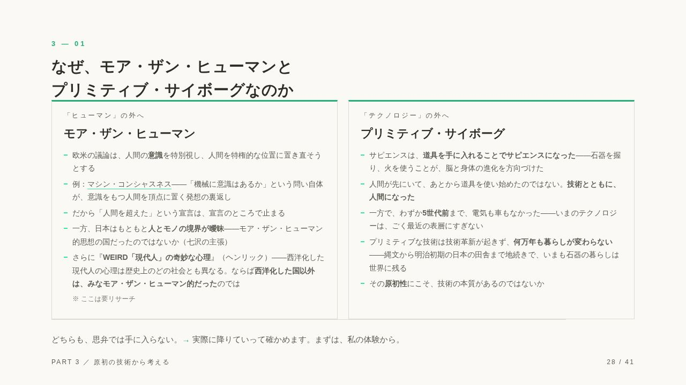
七沢は子どものころ、父の仕事の関係で鳥取の田舎に住んでいました。野山を駆け巡って毎日遊び、小学校の校区には信号がない。海があり、湖があり、テレビもあまり見なかった。
そういう中で育って、あるとき、現代社会というもの、大人の世界というものが、どうも嫌だと感じた。いま言葉にすれば——人工物に覆われていて、規則があらかじめ決まっていて、機械的に何かが決められていく。そこには自由がない。十歳ごろのことです。
つまり七沢は、ハイデガー的な問い——テクノロジーが人間のもともと持っていた感性を歪ませているのではないか——を、十歳のころから抱えていたわけです。
その後、大学で農学を学び、就職もせず、京都でフリーターをしながら音楽をやっていた。けれど自然への思いは消えなかった。西表島は九十パーセントが原生林らしい、ジャングルらしい——それを聞いて、ずっと行きたかった。そして音楽が芽を出さず、やめて、片道切符で島へ渡ります。
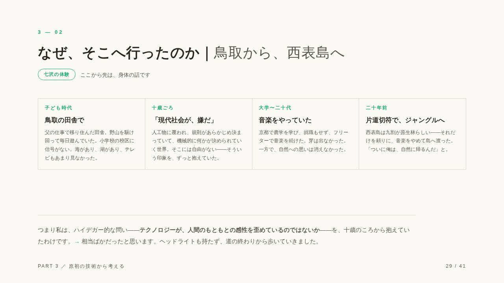
ヘッドライトも持たず、道の終わりからずっと歩いた先の、浜辺の横のジャングル。針と釣り糸だけで潜って魚を獲る。あまり獲れない。ライトがないのは、まあどうにかなる。寝ればいいからです。
ところが、台風が来た。テントが壊れ、火もつかない。もうだめだと退散した。
その退散した先、道の近くにもう一人キャンプしている人がいました。達人みたいな人で、台風の中でも平然としていて、薪もちゃんと用意してある。ジャングルの中なのに、三メートル四方くらいの空間にテントがびしっと張られ、そこだけが人間の空間になっていた。
ああ、人間には最低でもこういう最低限の人工空間がいるんだ——ここで、大きな気づきを得た。そして、それが拡張していったものが都市なのだ、と理解した。
道具なしでは一日ももたない。しかし同時に、本当に必要な道具は驚くほど少ない。人間は、最低限の道具を必要とするサイボーグである。
七沢はここで、いちばん引いた地点を見たと言います。いちばん引いたところまで行ったのだから、あとは引いたうえで、ちょうどいいところを探ればいい。二十年前の出来事ですが、これがそのまま、いまの方針になっています。
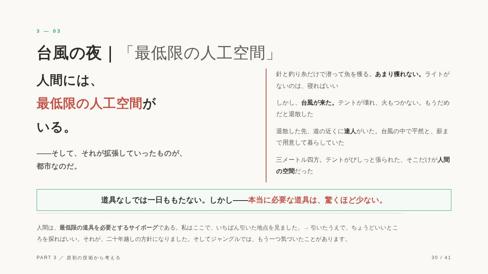
ジャングルでは、もう一つ気づいたことがあります。技術を発揮しているのは、人間だけではない。
蔓は他者の幹を足場にして光へ届く。ヤドカリは他者の殻を住居に変える。鳥は巣を編み、シロアリは空調の効いた塔を建て、菌糸は土の中に流通のネットワークを張る。島の漁師は、イノシシのことを「あいつ」と呼びます。あいつを捕まえた、あいつにやられた、いつやられるかわからないけど俺はやり返す——同じ生き物として語られている。チーターは狩りの技術を兄弟のあいだで発達させ、チンパンジーは道具を使う。
これまで私たちは、それらは「本能」であって、人間のものだけが「技術」だと切り分けてきました。けれども、その切り分けこそが、人間だけを特別扱いする近代の区別なのではないか。
技術とは、生きとし生けるものが環境に応じることで生じるはたらきである。森の中で、高いところに食べものがある。棒があるから、それで落とす。環境に引き出されて、技術が発揮される。七沢はここを技術の基層と呼びます。人間の技術は、その長い連続のなかの一つの現れにすぎない。
「技術は人間だけのものだ」という前提を外すと、人間中心主義は理屈ではなく実感としてほどけていきます。
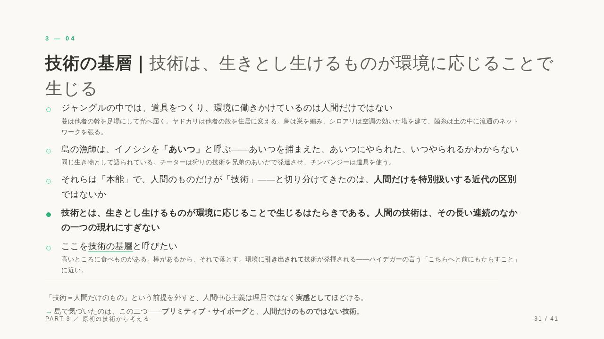
原初の技術から見えてくることが、もう一つあります。「つくる」ということそのものを、学び落とす必要がある。
一つ目。技術は、設計図をもとに作られるわけではない。人類学者インゴルドが言うように、ものは素材と、手と、環境の応答のなかで形になっていく。頭の中の形を材料に押しつけるのではなく、素材の抵抗と対話しながら生成していく。
二つ目。技術は、科学に先行する。理論があって技術ができたのではない。火も、舟も、発酵も、なぜそうなるのかがわかる何千年も前から作られていた。作ることが先で、説明は後から追いつく。
近代的な「つくる」——設計し、計画し、実装する——は、数ある作り方の一つにすぎません。だから、私たちが「つくる」だと思っているものを、いったん学び落とす（Unlearn）必要がある。
そのうえで、モア・ザン・ヒューマンの技術へ。人間だけでなく、動物、植物、菌、土、水、道具、そして技術。それらが共に世界を作っているという捉え方です。技術の基層から見れば、これは主義主張ではなく単なる事実の記述です。中心を別のものに移すのではなく、「中心が一つある」という考え方そのものを降りる。
ただし、ここが肝心です。これは思弁からは出てこないし、教科書も設計図もない。ユク・ホイは『ポストヨーロッパ』で、乗り越えるべきは近代であり、外から取り替えるのではなく内側から超えるほかない、と言います。けれども、その手順書はない。手がかりは、実在した「別の技術」にしかないのです。
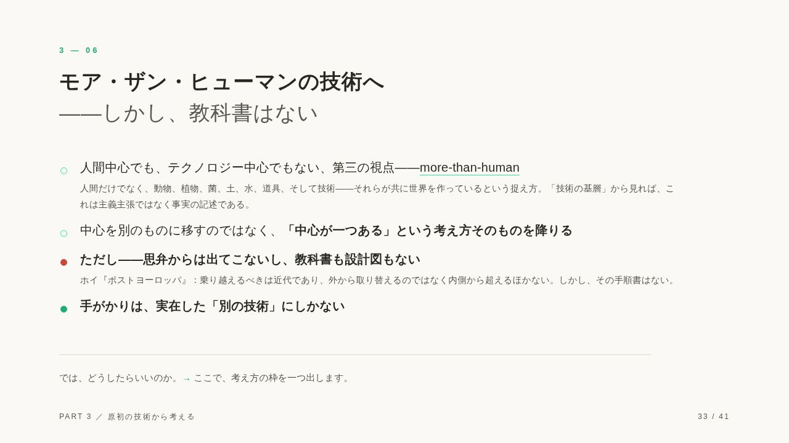
ここで、必ず来る誤解に先回りして答える一枚が置かれます。この講義でいちばん重要な自己弁明であり、同時にいちばん強い主張でもあります。
誤解① 「先住民の暮らしは素晴らしい」という賛美なのでは？
賛美はしない。実践して、確かめる。先住民の暮らしが素晴らしいと言いながら、自分はスーパーで買い、ネット通販で頼み、自分が大嫌いなはずの資本主義にどっぷり浸かって暮らしているなら、その主張には意味がない。素晴らしいと思ったら、取り入れて、実践して、それでどうなのかをやらないと、現代においては何も動かさない。
誤解② 近代を捨てて、過去に戻れということなのでは？
戻れない。そう暮らしていた人々は、近代のことも人権のことも知らずにそこにいた。もう少しさかのぼれば、意識というものがあったかどうかも怪しい。「個人」という概念だってデカルト以降のものです。そして私たちは、意識や個人という概念を失うことができない。だから「戻る」は最初から選択肢にない。
誤解③ プリミティブに戻れば、不自由になるのでは？
それは、まだ誰も知らない。近代的な意識、自律性、主体を持ったまま、過去のそういう実践をしてみるとどうなるのか。そこは、まだ開かれている。プリミティブライフを実践したら男尊女卑になるとは限らないし、近代的な価値や自律性が失われるとも限らない。そこを行かなければいけない。
だから、脱近代でも自然回帰でもありません。むしろその二項対立自体が、近代の発想なのです。技術はいくらでも枝分かれしてきていて、私たちがたまたま——確率的に——採用しなかった技術の可能性がある。それを、いま手にすることができるかもしれない。
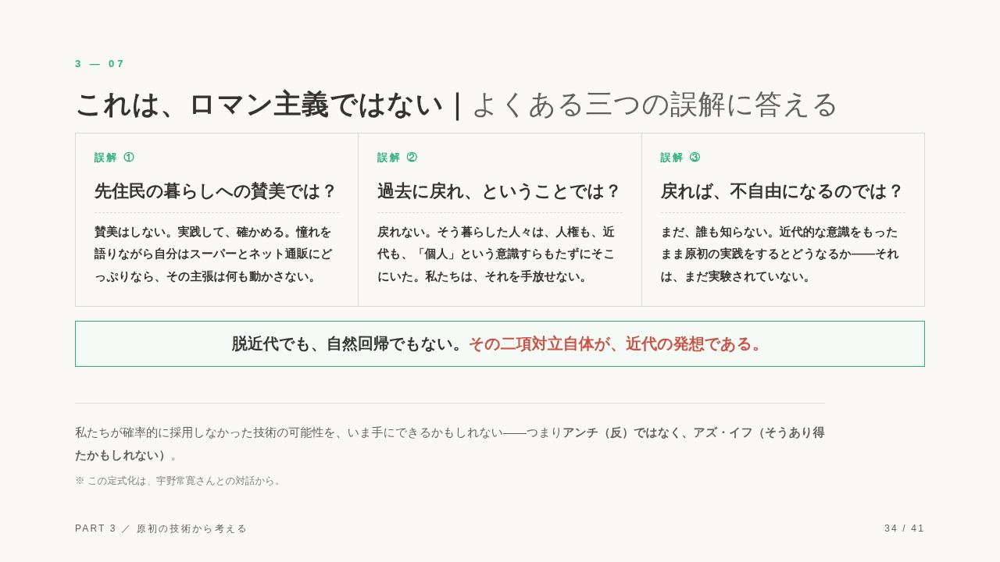
では、どうしたらいいのか。ここで考え方の枠が一つ出されます。
左に、ビッグバンから現在までの時間の流れ。地球の誕生、生命の誕生、道具の誕生、火の使用、国家の誕生、印刷の発明、産業革命、AIの発明、そして現在。現在から右へ、扇形が開いていく。これが「予測される未来」です。
大事なのは、この扇の角度です。「見渡せる未来」は、いまの延長線上にしか広がらない。だから——さかのぼった分だけ、投影できる未来の角度が広がる。
これはSFが描く未来とも違います。現代社会を営んでいる身体から想像するかぎり、想像力のフォーカスは閉じている。過去にさかのぼるというのは身体的な実践です。実際にプリミティブな暮らしをすることで、異なる感性、異なる技術の捉え方が身体から引き出されてくる。そこからの投影をすると、SFで描かれるものとは異なる未来が見えてくる。異なる身体を獲得することで、異なる未来が見える。
この考え方が、mUのカリキュラムの骨格でもある四つのSTEP——未来を見通す／根源にさかのぼる／現在を再定義する／社会実装を構想する——になっています。
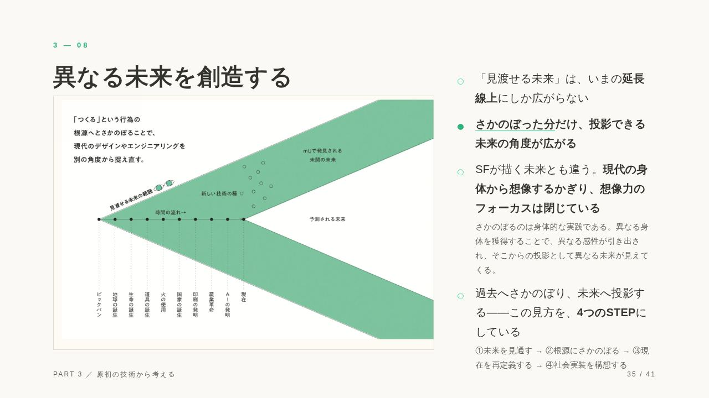
では、どこをさかのぼるのか。技術史です。
第1部で見た「直線的に進歩する階段」は、現実ではありません。歴史の書き方の産物です。実際の技術史は、枝分かれと傍流と絶滅に満ちている。失われた枝は失敗作ではなく、別の世界観の化石です。
そのうえで大事な問いがあります。どこまで、さかのぼるのか。
なお、柳田国男が「民俗学の限界は室町までだ」と言っています。伝承の記録がそこまでしか残っていないからです。その先は考古学になるしかない。逆に言えば、いまのテックの広がりが、そこに別の領域を開きつつあるのかもしれません。
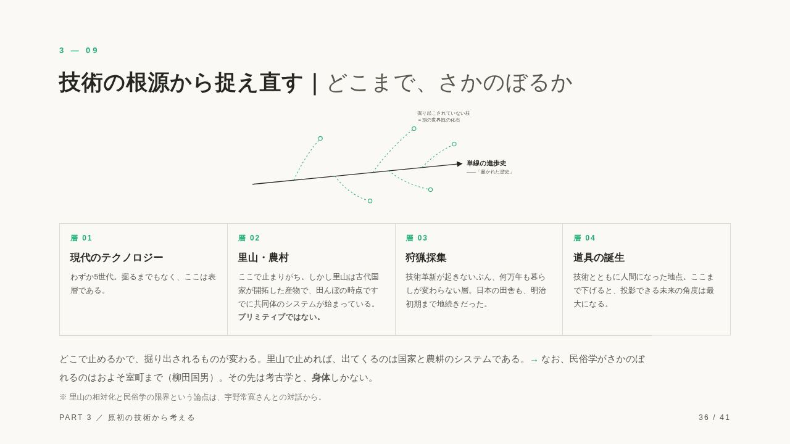
技術史は、読むだけでは身につきません。そのための試みが JUNGLE Gathering です。「現代人にジャングルを処方する」と銘打って、五年ほど前から年に三回、西表島の奥地に入っている。
移動する狩猟キャンプのようなスタイルで、厳選した道具だけを持って入り、竹から道具を作り、拾ってきた古い鉄を打ってナイフにし、塩を作る。長いときで三週間。時計も見ないし、スマホも基本的に見ない。それでも暮らせる。現代人は、意外とできる。最低限まで引き算して、そこから少しずつ足していくことで、生活は成立するのです。
そこで、忘れられない出来事がありました。八重山の博物館に行ったら、自分たちが工夫して作ったのとまったく同じたわしが展示されていた。発明したつもりのものが、すでにそこにあった。
身体が、同じ答えにたどり着く。これが、技術史を掘るということの、いちばん確かな手ごたえだった——と七沢は言います。
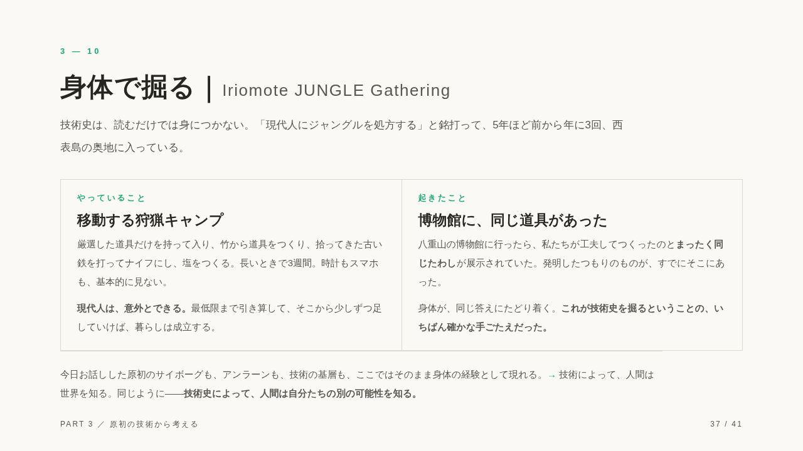
立場は、はっきりしています。近代的人間観も、近代技術も、捨てるわけではない。モア・ザン・ヒューマンとプリミティブ・サイボーグという観点から、それらを捉え直す。そこから、異なる未来が見えてこないか。
それが「未開の未来」という発想であり、そのための場としてつくられたのが makers Unlearn（mU）です。
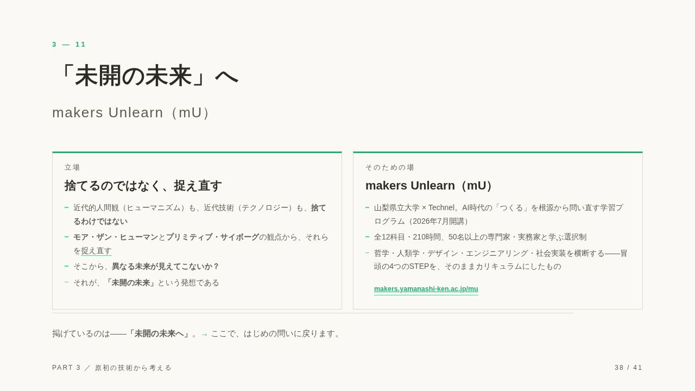
そして講義は、第1部の問いに戻ります。第3部で検討してきたことをもとにすれば、三つのことが言える、と。
——以上を、本日の答えとします。
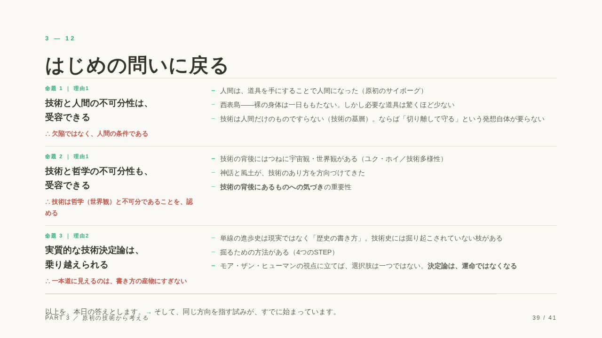
最後のメッセージは、意外なほど身近なところに着地します。
異なる技術の可能性を、日常の中で、いま、いかに発見するか。その試みこそが大切だ——と。西表島のジャングルや古文書の中だけの話ではありません。日常の中には、異なる技術がすでにたくさん埋め込まれている。台所に、畑に、路地に、言葉づかいに、別の系譜の技術は生きている。
その違いに、気づいていく。
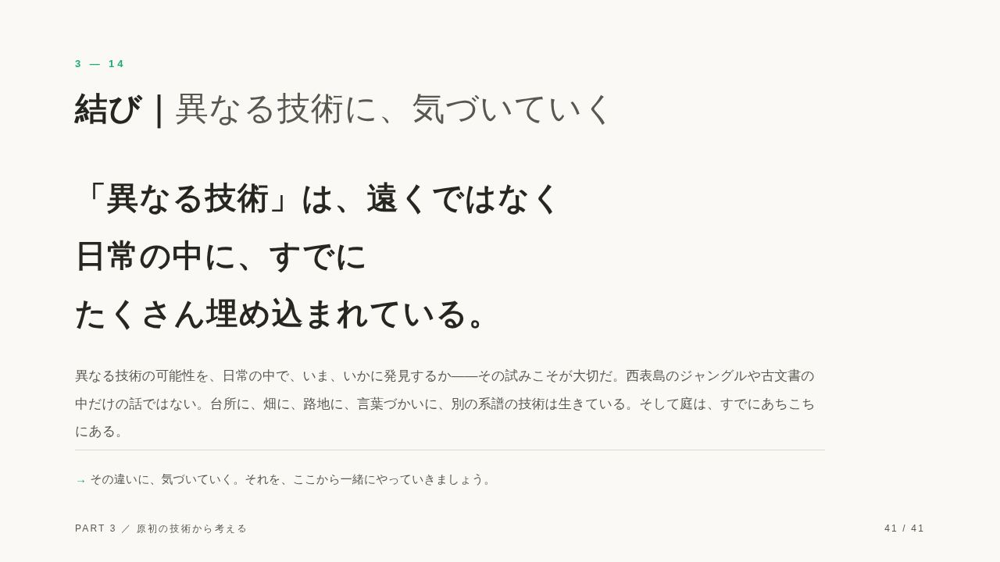
講義に出てきた鍵になる言葉を、この講義での使われ方に即して。
講義中に言及された主なもの。関心のある層から入るのがおすすめです。
このほか、人類学者ティム・インゴルド（「つくる」の生成的な理解）、脳科学者・入來篤史（道具使用と身体図式のサル実験）、柳田国男（民俗学がさかのぼれる範囲）などが言及されました。
この講義の第3部で出てきた「過去へさかのぼり、未来へ投影する」という枠は、そのまま makers Unlearn のカリキュラムの骨格です。四つのSTEPは、講義で語られたことの実行手順だと思ってください。
いまの延長線上に、どこまで見えているのかを確かめる。扇の角度を測るところから。
「つくる」の根源へ。技術哲学、技術史、人類学、身体、道具、環境、手仕事。今日の話の中心。
掘り起こした目で、見落とされてきた技術の可能性を、いまの現実のなかに発見する。
見つけた未来を、試作し、実践する。思弁で終わらせないための最後の一段。
講義の最後のメッセージを、もう一度。異なる技術は、西表島のジャングルや古文書の中にあるのではありません。台所に、畑に、路地に、言葉づかいに、すでに埋め込まれている。その違いに気づいていくこと——mUでやろうとしているのは、そのための目と身体をつくることです。
スライド全41枚は こちらから通しで見られます（キーボードの ← → で移動、O で目次）。
本レポートは、講義スライドと読み上げ原稿をもとに Claude（Anthropic）が構成・執筆したものです。要約・言い換えの責任はAI側にあり、講義の意図と異なる箇所があれば原典のスライドを優先してください。